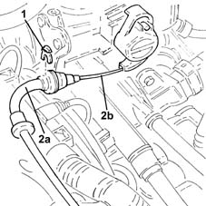

1068A10 accelerator pedal control - check, adjust if necessary and lubricate
- Path
- Procedures > 10 ENGINE > 1068 ACCELERATOR CONTROLS > 1068A accelerator pedal control > 1068A10 accelerator pedal control - check, adjust if necessary and lubricate
- Kind
- repair procedure (removal / refitting; the operation number is the code)
- Applies to
- engines: 1.2 8v; all production periods
- Interactive page
- https://sloeber94.github.io/elrnDB-lYpsln/en/#/2428931
Applies to: engines: 1.2 8v; all production periods
Proceed with removal 1048A10 air cleaner filtering element - replace .
With the pedal at rest, pull the accelerator cable through a travel of 3-6 mm and ensure the throttle valve does not open.
If it does, adjust the accelerator pedal as described below.
Ensure the accelerator pedal is in rest position.
1. Remove the accelerator control cable clip.
2. Adjust the sleeve of cable (2a) by moving it forward or backward and then lock with clip (2b). Adjust cable (1c), checking that when the pedal is fully released (at rest) the throttle valve is closed (cable not under tension) and when the pedal is fully depressed (at the end of its travel) the throttle valve is fully open (cable under tension).

Applies to: engines: 1.2 8v; all production periods
After adjustment, with the pedal at rest, pull the accelerator cable through a travel of 3-6 mm, ensuring that the throttle valve does not open.
Proceed with refitting 1048A10 air cleaner filtering element - replace .
Topics linked from this page (1)
Topics that link to this page (8)
- 1004B10 power unit with manual gearbox - r + r
- 1016A20 single cam cover - r + r and replace gasket
- 1016C10 cylinder head - r + r and replace gasket
- 1028H20 piston with connecting rod - r r
- 1056B14 throttle case - r + r
- 1068A14 accelerator pedal - r + r
- 1068A30 accelerator control cable - r + r
- 1072B10 inlet manifold - r + r and replace seal